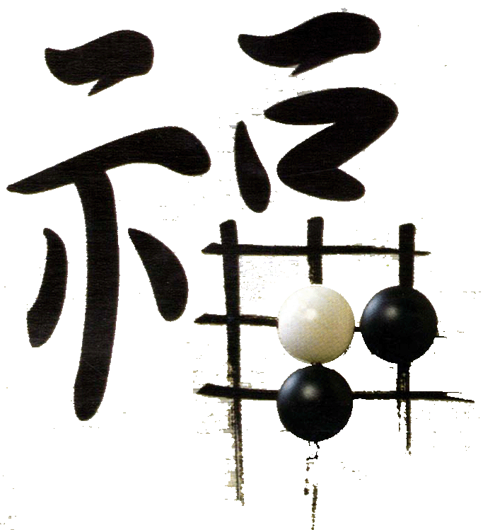

福建三位棋手将出征2012全国五子棋公开赛
#1 福建三位棋手将出征2012全国五子棋公开赛 作者：梧桐风 发表时间：2012-6-11 0:03:28
2012全国五子棋公开赛年将端午节于广州举行，福建三位老将棋手将出征些次赛事
参赛棋手：谢增忠五段，冰魔
林金顺五段，小虫
黄甸甸，厦门黄飞鸿
福建棋手续10年（当年参赛棋手戴晓涵、谢增忠、林金顺）、11年（戴晓涵、谢增忠、林金顺、林海恋）全国公开赛后，继续参加12年公开赛，对邻省浙江广东的赛事用行动表示了强烈的支持。
参加2012年全国五子棋公开赛三位棋手，都是福建五子棋的老将了。其中谢增忠更是有十年多的棋龄了，他对五子棋的坚持更是令人感动，从当年大学时代的年轻小伙到现在的为人师表，依然“冰魔”，依然活跃在一线，风风雨雨十载，终于于去年的智运会老树开花，取得殿军的好成绩，进升五段。
林金顺也是福建一大主力，是福建五子棋的顶梁柱之一，老将棋手，付出总有回报，林金顺对五子棋付出使他于10年公开赛获得第五名，进升五段。对五子棋的挚爱与坚持同样令人敬佩，连珠春秋近十载，“小虫”依然如故。2012年全国五子棋公开赛也将是小虫新婚后的第一场棋赛。
黄甸甸，福建厦门棋手，老将棋手。09年的浙江赛是他第一场五子棋棋赛，这次公开赛将是他人生第二场棋事。三手一的身影总会经常看到“厦门黄飞鸿”，这又是一位不改名的老棋手。2012年全国五子棋公开赛，新的突破正在等着飞飞。
三位棋手将分别从龙岩、福州和厦门会师广州，祝一路顺风，取得好成绩，享受比赛。祝2012年全国五子棋公开赛在广州圆满举行。
［此帖子已被 梧桐风 在 2012-6-11 0:05:58 编辑过］
［ 无尽 于 2012-6-11 0:14:49 时奖励此帖[金币加 100 威望加1］
［ 高飞 于 2012-6-11 9:47:03 时花20金币送鲜花一朵］
［ 天籁之琴 于 2012-6-11 16:16:40 时花20金币送鲜花一朵］
［ 天籁之琴 于 2012-6-11 16:16:47 时花20金币送鲜花一朵］
［ 掌棋宣传员 于 2012-6-11 18:46:24 时花20金币送鲜花一朵］
［ 掌棋宣传员 于 2012-6-11 18:46:27 时花20金币送鲜花一朵］
［ 掌棋宣传员 于 2012-6-11 18:46:29 时花20金币送鲜花一朵］
［ 黄药师 于 2012-6-11 21:11:46 时花20金币送鲜花一朵］
［ 黄药师 于 2012-6-11 21:11:55 时花20金币送鲜花一朵］
［ 黄药师 于 2012-6-11 21:12:06 时花20金币送鲜花一朵］
［ 猪小姐 于 2012-6-12 13:43:45 时花20金币送鲜花一朵］
［ 清风明月月 于 2012-6-12 20:45:41 时花20金币送鲜花一朵］
［ 吉小鼠 于 2012-6-12 23:07:12 时花20金币送鲜花一朵］
［ 吉小鼠 于 2012-6-12 23:07:14 时花20金币送鲜花一朵］
［ 吉小鼠 于 2012-6-12 23:07:16 时花20金币送鲜花一朵］
［ 冰雪笑醉 于 2012-6-13 16:15:18 时花20金币送鲜花一朵］
#2 Re:福建三位棋手将出征2012全国五子棋公开赛 作者：小小亦默 发表时间：2012-6-11 0:40:10
 good
good［ 梧桐风 于 2012-6-11 20:23:38 时花20金币送鲜花一朵］
#3 Re:福建三位棋手将出征2012全国五子棋公开赛 作者：wuxiao 发表时间：2012-6-11 12:08:05
海恋姐姐没参加公开赛啊!怎么可以这样!
［ 梧桐风 于 2012-6-11 20:23:30 时花20金币送鲜花一朵］
#4 Re:福建三位棋手将出征2012全国五子棋公开赛 作者：涩涩棋 发表时间：2012-6-11 18:23:22
广州真的好近啊啊啊［ 梧桐风 于 2012-6-11 20:23:22 时花20金币送鲜花一朵］
#5 Re:福建三位棋手将出征2012全国五子棋公开赛 作者：吉小鼠 发表时间：2012-6-11 20:08:06
海恋姐姐跟我一样，也要悲催的期末考额……T_T［ 梧桐风 于 2012-6-11 20:23:13 时花20金币送鲜花一朵］
#6 Re:福建三位棋手将出征2012全国五子棋公开赛 作者：吉小鼠 发表时间：2012-6-11 20:09:14
然后大家加油我围观~~~~\^o^/［ 梧桐风 于 2012-6-11 20:23:05 时花20金币送鲜花一朵］
#7 Re:福建三位棋手将出征2012全国五子棋公开赛 作者：猪小姐 发表时间：2012-6-12 13:44:42
 加油~~~~~~~~~~~~~~~
加油~~~~~~~~~~~~~~~［ 梧桐风 于 2012-6-12 21:32:58 时花20金币送鲜花一朵］
#8 Re:福建三位棋手将出征2012全国五子棋公开赛 作者：梦婷 发表时间：2012-6-12 14:41:50
 祝三位棋手取得好成绩！～
祝三位棋手取得好成绩！～
［ 梧桐风 于 2012-6-12 21:33:11 时花20金币送鲜花一朵］
#9 Re:福建三位棋手将出征2012全国五子棋公开赛 作者：弱惜 发表时间：2012-6-12 16:04:07
祝三位棋手取得好成绩。另外，海恋小盆友可以做为后勤组长出席，顺便把玉照放上。［ 梧桐风 于 2012-6-12 21:33:23 时花20金币送鲜花一朵］
#10 Re:福建三位棋手将出征2012全国五子棋公开赛 作者：猪小姐 发表时间：2012-6-12 16:59:21
海恋姐其实想参加浙江赛。广州木有师娘哇木哈哈哈哈啊哈哈哈哈~~~~~~#11 Re:福建三位棋手将出征2012全国五子棋公开赛 作者：清风明月月 发表时间：2012-6-12 20:47:19
祝福建棋取得好成绩，，，。［ 梧桐风 于 2012-6-12 21:33:41 时花20金币送鲜花一朵］
#12 Re:福建三位棋手将出征2012全国五子棋公开赛 作者：冰魔 发表时间：2012-6-12 21:29:55
梧桐也是老将［ 梧桐风 于 2012-6-12 21:33:48 时花20金币送鲜花一朵］
#13 Re:福建三位棋手将出征2012全国五子棋公开赛 作者：冰雪笑醉 发表时间：2012-6-13 16:16:06
好吧，祝取得好成绩，，
［ 梧桐风 于 2012-6-14 14:23:30 时花20金币送鲜花一朵］
［ 游戏人间 于 2013-6-11 14:22:52 时花20000金币送鲜花1000朵］
［ 厦门小天 于 2013-6-11 20:47:53 时花30000金币送鲜花1500朵］